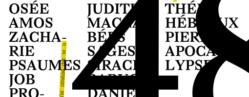
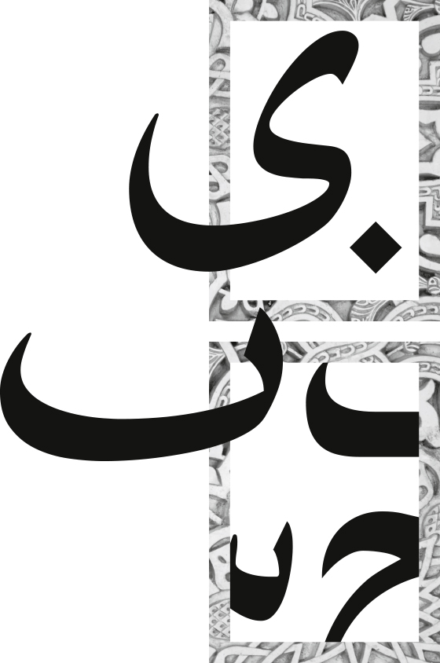
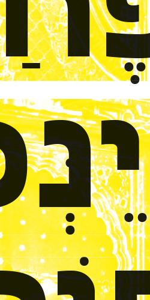

njdlskblkcnlkdjlfv cjldsjdéjvédf jcdosjvédosjéds jcosjcdks docsdjcdséjc djcdséo njdlskblkcnlkdjlfv cjldsjdéjvédf jcdosjvédosjéds jcosjcdks docsdjcdséjc djcdséo njdlskblkcnlkdjlfv cjldsjdéjvédf jcdosjvédosjéds jcosjcdks docsdjcdséjc djcdséo njdlskblkcnlkdjlfv cjldsjdéjvédf jcdosjvédosjéds jcosjcdks docsdjcdséjc djcdséo njdlskblkcnlkdjlfv cjldsjdéjvédf jcdosjvédosjéds jcosjcdks docsdjcdséjc djcdséonjdlskblkcnlkdjlfv cjldsjdéjvédf jcdosjvédosjéds jcosjcdks docsdjcdséjc djcdséo njdlskblkcnlkdjlfv cjldsjdéjvédf jcdosjvédosjéds jcosjcdks docsdjcdséjc djcdséo njdlskblkcnlkdjlfv cjldsjdéjvédf jcdosjvédosjéds jcosjcdks docsdjcdséjc djcdséo njdlskblkcnlkdjlfv cjldsjdéjvédf jcdosjvédosjéds jcosjcdks docsdjcdséjc djcdséo njdlskblkcnlkdjlfv cjldsjdéjvédf jcdosjvédosjéds jcosjcdks docsdjcdséjc djcdséonjdlskblkcnlkdjlfv cjldsjdéjvédf jcdosjvédosjéds jcosjcdks docsdjcdséjc djcdséo njdlskblkcnlkdjlfv cjldsjdéjvédf jcdosjvédosjéds jcosjcdks docsdjcdséjc djcdséo njdlskblkcnlkdjlfv cjldsjdéjvédf jcdosjvédosjéds jcosjcdks docsdjcdséjc djcdséo njdlskblkcnlkdjlfv cjldsjdéjvédf jcdosjvédosjéds jcosjcdks docsdjcdséjc djcdséo njdlskblkcnlkdjlfv cjldsjdéjvédf jcdosjvédosjéds jcosjcdks docsdjcdséjc djcdséo njdlskblkcnlkdjlfv cjldsjdéjvédf jcdosjvédosjéds jcosjcdks docsdjcdséjc djcdséo njdlskblkcnlkdjlfv cjldsjdéjvédf jcdosjvédosjéds jcosjcdks docsdjcdséjc djcdséo njdlskblkcnlkdjlfv cjldsjdéjvédf jcdosjvédosjéds jcosjcdks docsdjcdséjc djcdséo njdlskblkcnlkdjlfv cjldsjdéjvédf jcdosjvédosjéds jcosjcdks docsdjcdséjc djcdséo njdlskblkcnlkdjlfv cjldsjdéjvédf jcdosjvédosjéds jcosjcdks docsdjcdséjc djcdséonjdlskblkcnlkdjlfv cjldsjdéjvédf jcdosjvédosjéds jcosjcdks docsdjcdséjc djcdséo njdlskblkcnlkdjlfv cjldsjdéjvédf jcdosjvédosjéds jcosjcdks docsdjcdséjc djcdséo njdlskblkcnlkdjlfv cjldsjdéjvédf jcdosjvédosjéds jcosjcdks docsdjcdséjc djcdséo njdlskblkc
Hac ita persuasione reducti intra moenia bellatores obseratis undique portarum aditibus in pani.
JEAN,

ABCDEFG
HIJKLMNO
PQRSTUV
WXYZ.,!?
Hac ita persuasione reducti intra moenia bellatores obseratis undique portarum aditibus, propugnaculis insistebant et pinnis, congesta undique saxa telaque habentes in promptu, ut si quis se proripuisset interius, multitudine missilium sterneretur et lapidum. Hae duae provinciae bello quondam piratico catervis mixtae praedonum a Servilio pro consule missae sub iugum factae sunt vectigales. et hae quidem regiones velut in prominenti terrarum lingua positae ob orbe eoo monte Amano disparantur.Quod cum ita sit, paucae domus studiorum seriis cultibus antea celebratae nunc ludibriis ignaviae torpentis exundant, vocali sonu, perflabili tinnitu fidium resultantes. denique pro philosopho cantor et in locum oratoris doctor artium ludicrarum accitur et bybliothecis sepulcrorum ritu in perpetuum clausis organa fabricantur hydraulica, et lyrae ad speciem carpentorum ingentes tibiaeque et histrionici gestus instrumenta non levia. Paphius quin etiam et Cornelius senatores, ambo venenorum artibus pravis se polluisse confessi, eodem pronuntiante Maximino sunt interfecti. pari sorte etiam procurator monetae extinctus est. Sericum enim et Asbolium supra dictos, quoniam cum hortaretur passim nominare, quos vellent, adiecta religione firmarat, nullum igni vel ferro se puniri iussurum, plumbi validis ictibus interemit. et post hoe flammis Campensem aruspicem dedit, in negotio eius nullo sacramento constrictus. Quibus occurrere bene pertinax miles explicatis ordinibus parans hastisque feriens scuta qui habitus iram pugnantium concitat et dolorem proximos iam gestu terrebat sed eum in certamen alacriter consurgentem revocavere ductores rati intempestivum anceps subire certamen cum haut longe muri distarent, quorum tutela securitas poterat in solido locari cunctorum.Quam ob rem circumspecta cautela observatum est deinceps et cum edita montium petere coeperint grassatores, loci iniquitati milites cedunt. ubi autem in planitie potuerint reperiri, quod contingit adsidue, nec exsertare lacertos nec crispare permissi tela, quae vehunt bina vel terna, pecudum ritu inertium trucidantur. Raptim igitur properantes ut motus sui rumores celeritate nimia praevenirent, vigore corporum ac levitate confisi per flexuosas semitas ad summitates collium tardius evadebant. et cum superatis difficultatibus arduis ad supercilia venissent fluvii Melanis alti et verticosi, qui pro muro tuetur accolas circumfusus, augente nocte adulta terrorem quievere paulisper lucem opperientes. arbitrabantur enim nullo inpediente transgressi inopino adcursu adposita quaeque vastare, sed in cassum labores pertulere gravissimos. Vbi curarum abiectis ponderibus aliis tamquam nodum et codicem difficillimum Caesarem convellere nisu valido cogitabat, eique deliberanti cum proximis clandestinis conloquiis et nocturnis qua vi, quibusve commentis id fieret, antequam effundendis rebus pertinacius incumberet confidentia, acciri mollioribus scriptis per simulationem tractatus publici nimis urgentis eundem placuerat Gallum, ut auxilio destitutus sine ullo interiret obstaculo. Ex turba vero imae sortis et paupertinae in tabernis aliqui pernoctant vinariis, non nulli velariis umbraculorum theatralium latent, quae Campanam imitatus lasciviam Catulus in aedilitate sua suspendit omnium primus; aut pugnaciter aleis certant turpi sono fragosis naribus introrsum reducto spiritu concrepantes; aut quod est studiorum omnium maximum ab ortu lucis ad vesperam sole fatiscunt vel pluviis, per minutias aurigarum equorumque praecipua vel delicta scrutantes. Post hoc impie perpetratum quod in aliis quoque iam timebatur, tamquam licentia crudelitati indulta per suspicionum nebulas aestimati quidam noxii damnabantur. quorum pars necati, alii puniti bonorum multatione actique laribus suis extorres nullo sibi relicto praeter querelas et lacrimas, stipe conlaticia victitabant, et civili iustoque imperio ad voluntatem converso cruentam, claudebantur opulentae domus et clarae. Nemo quaeso miretur, si post exsudatos labores itinerum longos congestosque adfatim commeatus fiducia vestri ductante barbaricos pagos adventans velut mutato repente consilio ad placidiora deverti.
Et quoniam apud eos ut in capite mundi morborum acerbitates celsius dominantur, ad quos vel sedandos omnis professio medendi torpescit, excogitatum est adminiculum sospitale nequi amicum perferentem similia videat, additumque est cautionibus paucis remedium aliud satis validum, ut famulos percontatum missos quem ad modum valeant noti hac aegritudine colligati, non ante recipiant domum quam lavacro purgaverint corpus. ita etiam alienis oculis visa metuitur labes. Emensis itaque difficultatibus multis et nive obrutis callibus plurimis ubi prope Rauracum ventum est ad supercilia fluminis Rheni, resistente multitudine Alamanna pontem suspendere navium conpage Romani vi nimia vetabantur ritu grandinis undique convolantibus telis, et cum id inpossibile videretur, imperator cogitationibus magnis attonitus, quid capesseret ambigebat. Ex turba vero imae sortis et paupertinae in tabernis aliqui pernoctant vinariis, non nulli velariis. Domum quam lavacro purgaverint corpus. ita etiam alienis oculis visa metuitur labes.
+*%&/(=)?'`'èüéöäà£$,.:;!<,>‹#%ç{≠¿][Ç“]}
Vbi curarum abiectis ponderi aliis tamquam
الرب قد شكلت من الأرض. وقال للمرأة: لماذالله
التصوير الفوتوغرافي من كتاب الذي هو أسود و البالية على حافة غطاء أشار الكتاب المقدس
الكتاب المقدس يرجع تاريخها
الكتاب المقدس عبارة عن مجموعة من النصوص تعتبر مقدسة من قبل اليهودية والمسيحية . ويمكن أن تشمل مختلف الجماعات الدينية الكتب المختلفة أسلحتهم في ترتيب مختلف . نصوص الكتب بحد ذاتها ليست دائما متطابقة من جماعة دينية واحدة إلى أخرى .
ويسمى الكتاب المقدس العبرية في العبرية أناخ ، اختصار تشكلت من عناوين ثلاثة أجزاء المكونة لها : التوراة ( القانون) ، أسفار الأنبياء ( الأنبياء ) و أسفار الكتابات ( كتابات أخرى ) . وقد ترجم إلى اليونانية في الإسكندرية . تم استخدام هذا الإصدار ، ودعا السبعينية ، في وقت لاحق من قبل جيروم لاستكمال ترجمته اللاتينية للكتاب المقدس من العبرية ( النسخه اللاتينية للانجيل ) و " الرسل من السلاف " سيريل وميثوديوس لترجمة الكتاب المقدس إلى ا
لرب

התנ"ך הוא אוסף של טקסטים נחשב קדוש על ידי היהדות והנצרות . קבוצות דתיות שונות עשויות לכלול ספרים שונים רוביהם בסדר שונה . הטקסטים של הספרים עצמם אינם זהים תמיד מקבוצה דתית אחת לאחרת . התנ"ך העברי נקרא עברית התנ"ך , ראשי התיבות התגבשו מתוך כותרים מהשלושה חלקים המרכיבים אותה : התורה ( החוק ) ,הנביאים (נביאים ) וכתובים (כתבים אחרים ) . הוא תורגם ביוונית באלכסנדריה . גרסה זו , המכונית בתרגום השבע , שמשה מאוחר יותר על ידי ג'רום כדי להשלים התרגום הלטיני שלו של התנ"ך העברי ( הוולגטה ) ואת " השליחים של הסלאבים " קירילוס ומתודיוס לתרגם תנ"ך הוא אוסף של טקסטים נחשב קדוש על ידי היהדות והנצרות . קבוצות דתיות שונות עשויות לכלול ספרים שונים רוביהם בסדר שונה . הטקסטים של הספרים עצמם אינם זהים תמיד מקבוצה דתית אחת לאחרת התנ"ך הוא אוסף של אחת לאחרת התנ"ך הוא אוסף של הטקסטים של הספרים עצמם אינם זהים תמיד מקבוצה דתית אחת לאחרת התנ"ך הוא אוסף של אחת לאחרת התנ"ך הוא אוסף של
זוהי דוגמא של טקסט עברי . אני לא יודע מה עוד להגיד אבל זה יהיה וכתובים (כתבים אחרים ) . הוא תורגם ביוונית באלכסנדריה . גרסה זו , המכונית בתרגום השבע , שמשה מאוחר יותר.

התנ"ך הוא אוסף של טקסטים נחשב קדוש על ידי היהדות והנצרות . קבוצות דתיות שונות עשויות לכלול ספרים שונים רוביהם בסדר שונה . הטקסטים של הספרים עצמם אינם זהים תמיד מקבוצה דתית אחת לאחרת . התנ"ך העברי נקרא עברית התנ"ך , ראשי התיבות התגבשו מתוך כותרים מהשלושה חלקים המרכיבים אותה : התורה ( החוק ) ,הנביאים (נביאים ) וכתובים (כתבים אחרים ) . הוא תורגם ביוונית באלכסנדריה . גרסה זו , המכונית בתרגום השבע , שמשה מאוחר יותר על ידי ג'רום כדי להשלים התרגום הלטיני שלו של התנ"ך העברי ( הוולגטה ) ואת " השליחים של הסלאבים " קירילוס ומתודיוס לתרגם תנ"ך הוא אוסף של טקסטים נחשב קדוש על ידי היהדות והנצרות . קבוצות דתיות שונות עשויות לכלול ספרים שונים רוביהם בסדר שונה . הטקסטים של הספרים עצמם אינם זהים תמיד מקבוצה דתית אחת לאחרת התנ"ך הוא אוסף של טקסטים נחשב קדוש על ידי היהדות והנצרות . קבוצות דתיות שונות עשויות לכלול ספרים שונים רוביהם בסדר שונה . הטקסטים של הספרים עצמם אינם זהים תמיד מקבוצה דתית אחת לאחרת . התנ"ך העברי נקרא עברית התנ"ך , ראשי התיבות התגבשו מתוך כותרים מהשלושה חלקים המרכיבים אותה : התורה ( החוק ) ,הנביאים (נביאים ) וכתובים (כתבים אחרים ) . הוא תורגם ביוונית באלכסנדריה . גרסה זו , המכונית בתרגום השבע , שמשה מאוחר יותר על ידי ג'רום כדי להשלים התרגום הלטיני שלו של התנ"ך העברי ( הוולגטה ) ואת " השליחים של הסלאבים " קירילוס ומתודיוס לתרגם תנ"ך הוא אוסף של טקסטים נחשב קדוש על ידי היהדות והנצרות . קבוצות דתיות שונות עשויות לכלול ספרים שונים רוביהם בסדר שונה . הטקסטים של הספרים עצמם אינם זהים תמיד מקבוצה דתית אחת לאחרת
מ